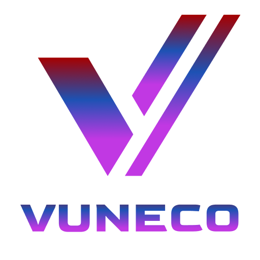
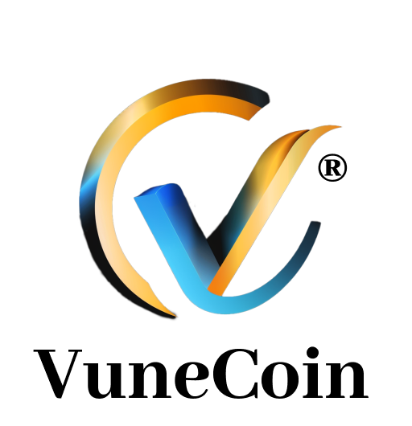
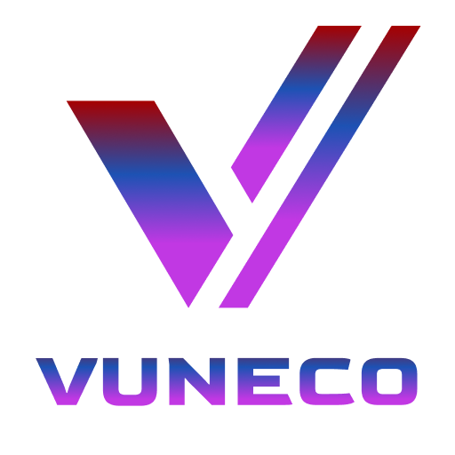
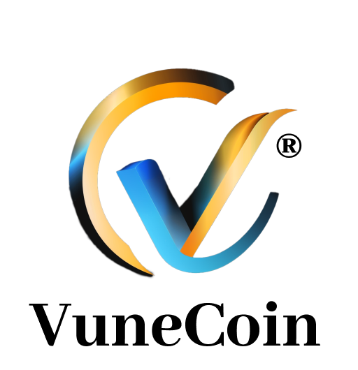

VuneCoin – das Ökosystem der Zukunft:
- 🎫 Ticketzahlungen bei Events & Locations
- 💼 Sponsoring-Zahlungen & Deals
- 🛡️ ElionTrust-Verifizierungen für Personen & Unternehmen
- 📄 NFT-Zertifikate, digitale Siegel & Smart Contracts
Diese Funktionen befinden sich derzeit in aktiver Entwicklung. Der laufende ICO ermöglicht es, frühzeitig VuneCoins zu erwerben
und damit die Umsetzung dieser innovativen Lösungen aktiv zu unterstützen.
Investoren erhalten nicht nur Coins mit langfristigem Potenzial, sondern werden Teil eines realen Ökosystems mit echter Anwendung.